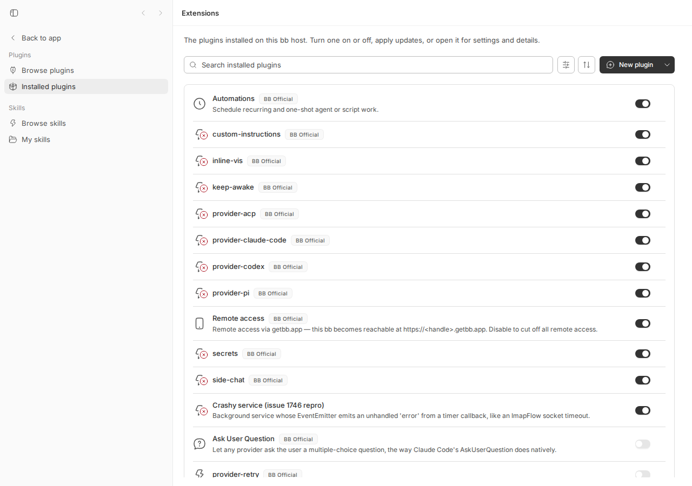
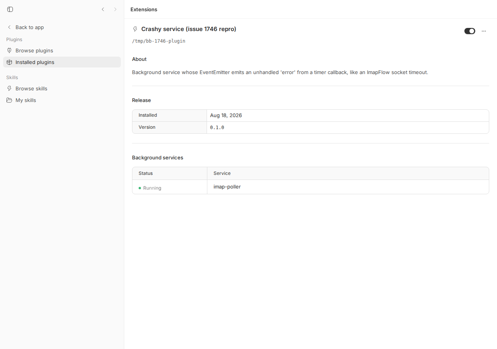

#1746 · Plugin background services can kill the server: supervisor only sees the promise chain
1. TL;DR
bb plugins run inside the server process (loaded with jiti in plugin-runtime.ts). A plugin background service is supervised only through the promise returned by its start(signal). If plugin code raises an error outside that promise chain — an EventEmitter 'error' with no listener, a throw in a setTimeout callback, or a detached promise rejection — Node turns it into an uncaught exception. The server only registers process.on("uncaughtExceptionMonitor"), which writes a crash dump and deliberately lets Node exit. So one careless plugin kills the whole server; the supervisor's backoff/restart never fires; the process supervisor restarts the server, the plugin autoloads, and it dies again — a crash loop.
Because every crash tears down the server, the host daemon's session gets closed as replaced on reconnect and users see thread interruptions that look like a host-daemon problem. The crash dump names the throwing library, not the owning plugin, and the plugin's status stays "running" the whole time.
I reproduced the whole chain on a fresh dev instance in under a minute with an 18-line plugin: 14 process-server-uncaughtException-*.json dumps, 4 daemon sessions closed as replaced, dev-supervisor restart backoff, and a UI still showing the service as Running.
2. Claims vs findings
| Claim (from issue) | Status | Evidence |
|---|---|---|
Plugin services are supervised only via the start() promise chain (runService/onServiceSettled) | Verified | apps/server/src/services/plugins/plugin-runtime.ts L557–L631 (issue says L427; line numbers moved on main). Only current.then(ok, crash) is observed. |
Server registers only uncaughtExceptionMonitor, which observes and lets the process die | Verified | packages/process-utils/src/index.ts L327–L349 (issue says L257/L271); called from apps/server/src/index.ts L11. No uncaughtException/unhandledRejection handler anywhere in apps/server/src. |
An EventEmitter 'error' with no listener, from a timer tick, kills the server | Verified (live) | Installed repro plugin → server exited code 1 three seconds after load, dump written, dev-supervisor restarted it, loop repeated 14× until I removed the plugin. |
| Same hole for detached promise rejections and raw timer throws | Verified | Node default --unhandled-rejections=throw: node -e 'setTimeout(()=>{void Promise.reject(new Error("x"))},10)' exits 1. Timer throw goes to the same monitor (see als-attribution-check.mjs output). |
Each crash dropped the host daemon connection; DB shows host_daemon_sessions closed as replaced | Verified (mechanism) | My run: 4 sessions closed as replaced. Note: not 1:1 with crashes — the daemon reconnected to the same session across several fast restarts (session lease outlived the short outage), so counts differ from the issue's 1613/1321. Producer: apps/server/src/internal/session-owner-side-effects.ts L99–L101. |
| User-visible symptom “Thread interrupted because the host daemon disconnected” | Verified (code path) | String at apps/server/src/services/threads/thread-lifecycle.ts L390, reason host-daemon-restarted, emitted from session-owner-side-effects.ts L118 when a session is replaced by a different daemon instance. I did not run an active thread during the crash loop (would cost real provider usage); the path is deterministic. |
| Crash dumps do not name the owning plugin | Verified, with nuance | Dump contains only error.name/message/stack. In my repro the stack happens to include the plugin file (file:///tmp/bb-1746-plugin/server.js?bbPluginLoad=…) because the timer callback lives in the plugin itself. With imapflow the callback is inside node_modules/imapflow, so no plugin frame appears — matches the issue. There is no plugin id field in the dump either way. |
| 1321 dumps over 5 days, ~5m11s cadence, on bb 0.35.1 / Ubuntu 22.04 | Unverified | Reporter's production data; consistent with the mechanism (imapflow's default socket timeout ≈ 5 min). |
Attribution via AsyncResource/AsyncLocalStorage is feasible | Verified (experiment) | als.getStore() inside uncaughtExceptionMonitor and unhandledRejection returns the plugin's store for all three failure shapes on Node 24.18 (see §7 and appendix). |
| Already fixed on main? | No | Base 16ceb3a54 still has monitor-only diagnostics and promise-only supervision. |
3. Environment
- bb: main @
16ceb3a540f81c1189efaffb27a39b1d9443abf5, worktree/home/USER/projects/bb/.claude/worktrees/wf_debcf606-e4a-3 - OS: Linux 7.0.0-29-generic x86_64; Node v24.18.0
- Dev instance (
scripts/bb-dev-app current): Apphttp://localhost:16215, Serverhttp://localhost:24215, Host daemonhttp://127.0.0.1:32215, data dir~/.bb-dev/projects-bb-.claude-worktrees-wf_debcf606-e4a-3-99edd75f30b8 - Server run under
apps/server/scripts/dev-supervisor.mjs(restarts on unexpected exit with backoff — same shape as a production process manager) - No providers were exercised; no real agent turns spent.
4. Minimal reproduction
4a. Live: 18-line plugin crash-loops the server
- Create the plugin (files also saved at
1746/repro/package.jsonand1746/repro/server.js):mkdir -p /tmp/bb-1746-plugin cat > /tmp/bb-1746-plugin/package.json <<'EOF' { "name": "bb-plugin-crashy-service", "version": "0.1.0", "type": "module", "bb": { "name": "Crashy service (issue 1746 repro)", "description": "Background service whose EventEmitter emits an unhandled 'error' from a timer callback, like an ImapFlow socket timeout.", "branding": { "icon": "Zap" }, "server": "./server.js" } } EOF// /tmp/bb-1746-plugin/server.js import { EventEmitter } from "node:events"; // Mimics an ImapFlow client created without an 'error' listener: the socket // timeout fires from a timer on a later tick, and Node rethrows an unlistened // 'error' event as an uncaught exception. export default function (bb) { bb.background.service("imap-poller", { async start(signal) { bb.log.info("imap-poller started; will emit unhandled 'error' in 3s"); const client = new EventEmitter(); // no client.on("error", ...) — the bug setTimeout(() => { client.emit("error", new Error("Socket timeout")); }, 3_000); // The service itself never rejects: it just waits for abort. await new Promise((resolve) => signal.addEventListener("abort", resolve)); }, }); } - Start a dev instance and install the plugin:
scripts/bb-dev-app current eval "$(scripts/bb-dev-app env)" pnpm bb:dev plugin install /tmp/bb-1746-plugin --yes
Output (verbatim,install-output.txt):Installing bb-plugin-crashy-service@0.1.0 from /tmp/bb-1746-plugin Plugins are full-trust code running inside the BB server. They can read all local BB data, including other plugins' secrets. Installed: crashy-service@0.1.0 running source: path:/tmp/bb-1746-plugin service imap-poller: running
- Expected: after 3 s the service crashes,
onServiceSettledlogsservice imap-poller crashed: Socket timeout — restarting in 1000ms, server keeps running.
Actual: the server process exits with code 1. Data-dir logs 8 s later:$ ls <data dir>/logs host-daemon.1.log process-server-uncaughtException-2026-08-18T04-37-58-283Z-8d7f7cd3-….json server.1.log
Dump contents (saved) — note there is no field identifying the plugin:{ "diagnosticVersion": 1, "kind": "uncaughtException", "processName": "server", "occurredAt": "2026-08-18T04:37:58.283Z", "pid": 1157523, "runtime": { "nodeVersion": "v24.18.0", "platform": "linux", "arch": "x64", "execPath": "…/node" }, "error": { "name": "Error", "message": "Socket timeout", "stack": "Error: Socket timeout\n at Timeout._onTimeout (file:///tmp/bb-1746-plugin/server.js?bbPluginLoad=12.12:12:30)\n at listOnTimeout (node:internal/timers:605:17)\n at process.processTimers (node:internal/timers:541:7)" } }Supervisor stderr (dev-log-excerpt.txt):Error: Socket timeout at Timeout._onTimeout (file:///tmp/bb-1746-plugin/server.js?bbPluginLoad=12.12:12:30) … Emitted 'error' event at: at Timeout._onTimeout (file:///tmp/bb-1746-plugin/server.js?bbPluginLoad=12.12:12:16) [dev-supervisor:server] Child exited unexpectedly with exit code 1. Restarting in 1s. [dev-supervisor:server] Child exited unexpectedly with exit code 1. Restarting in 2s. [dev-supervisor:server] Child exited unexpectedly with exit code 1. Restarting in 4s. [dev-supervisor:server] Child exited unexpectedly with exit code 1. Restarting in 8s. - Crash loop: each restart autoloads the plugin, which kills the server again. Server log (excerpt) shows the same "Server listening → plugin crashy-service loaded → Server listening" pattern; 14 dumps accumulated in ~3 minutes (
dump-list.txt). Host daemon sessions (host_daemon_sessions.txt):$ sqlite3 -header bb.db "select id,status,close_reason,datetime(created_at/1000,'unixepoch'),datetime(closed_at/1000,'unixepoch') from host_daemon_sessions" id|status|close_reason|created|closed hses_brarz52xtc|closed|replaced|2026-08-18 04:36:14|2026-08-18 04:38:02 hses_ehy38kfahz|closed|replaced|2026-08-18 04:38:02|2026-08-18 04:38:09 hses_wmrgf2656b|closed|replaced|2026-08-18 04:38:09|2026-08-18 04:38:20 hses_yhu29x3gam|closed|replaced|2026-08-18 04:38:20|2026-08-18 04:41:07 hses_kqn7m88wd9|active||2026-08-18 04:41:07|
- Meanwhile the UI reports the plugin and its service as healthy:


onServiceSettled.- Stop the loop:
bb plugin remove crashy-service(needs to be issued in the ~5 s window the server is up; I polled/api/v1/pluginsuntil it answered). Thenpnpm dev:stop.
4b. Standalone: supervisor never sees the throw
Same mechanism without a running bb, using the real installSafeProcessDiagnostics and a copy of runService. File: repro-1746-service-supervisor-gap.mts (also placed at apps/server/test/ in my worktree).
// Issue #1746 standalone repro (run with: node --import tsx apps/server/test/repro-1746-service-supervisor-gap.mts)
import { EventEmitter } from "node:events";
import { mkdtempSync, readdirSync } from "node:fs";
import { tmpdir } from "node:os";
import { join } from "node:path";
import { installSafeProcessDiagnostics } from "@bb/process-utils";
const logsDir = mkdtempSync(join(tmpdir(), "bb-1746-"));
installSafeProcessDiagnostics({ logsDir, processName: "repro" });
let supervisorSawCrash = false;
function runService(start: (signal: AbortSignal) => Promise<void>): void {
const controller = new AbortController();
const current = (async () => {
await start(controller.signal);
})();
current.then(
() => console.log("supervisor: service stopped cleanly"),
(error) => {
supervisorSawCrash = true;
console.log("supervisor saw crash:", String(error));
},
);
}
runService(async (signal) => {
const client = new EventEmitter(); // ImapFlow without .on("error")
setTimeout(() => client.emit("error", new Error("Socket timeout")), 50);
await new Promise<void>((resolve) => signal.addEventListener("abort", () => resolve()));
});
process.on("exit", (code) => {
console.log(`exit code=${code} supervisorSawCrash=${supervisorSawCrash}`);
console.log("dumps:", readdirSync(logsDir));
});
$ cd apps/server && node --conditions=source --import tsx test/repro-1746-service-supervisor-gap.mts
exit code=1 supervisorSawCrash=false
dumps: [ 'process-repro-uncaughtException-2026-08-18T04-41-44-709Z-e50cd111-….json' ]
node:events:487
throw er; // Unhandled 'error' event
^
Error: Socket timeout
at Timeout._onTimeout (…/apps/server/test/repro-1746-service-supervisor-gap.mts:38:41)
EXIT=1
Expected (if supervision were sufficient): supervisor saw crash: Error: Socket timeout and exit code 0. Actual: supervisorSawCrash=false, exit code 1.
5. Root cause
Plugins are in-process, full-trust code. plugin-runtime.ts imports the plugin's server entry with jiti into the server's own module graph and calls its factory (plugin-runtime.ts L1478–L1500). Nothing isolates plugin execution from server execution.
Supervision is promise-only. runService wraps start(signal) and only attaches handlers to that promise (plugin-runtime.ts L556–L572):
function runService(id: string, service: ServiceRuntime): void {
const controller = new AbortController();
…
const current = (async () => {
await service.record.start(controller.signal);
})();
service.current = current;
current.then(
() => onServiceSettled(id, service, { crashed: false }),
(error: unknown) => onServiceSettled(id, service, { crashed: true, error }),
);
}
Anything the service schedules that fails outside that chain — Node's EventEmitter re-throwing an unlistened 'error' (node:events:487 throw er; // Unhandled 'error' event), a throw in a timer callback, or a promise rejection nobody awaits — becomes a process-level uncaught exception / unhandled rejection. onServiceSettled and its backoff at L574–L631 never run.
The process-level handler is observe-only. installSafeProcessDiagnostics registers only uncaughtExceptionMonitor (process-utils/src/index.ts L327–L349), whose contract is that it cannot prevent the default exit:
process.on("uncaughtExceptionMonitor", handleUncaughtExceptionMonitor);
There is no uncaughtException and no unhandledRejection handler in apps/server/src, so Node's defaults apply: exit code 1 in both cases (Node ≥15 default --unhandled-rejections=throw). This is a deliberate choice for server-owned code (comment at L321–L326), and it is correct for server-owned code; it just gives plugin code the same blast radius as the server itself.
Why the visible symptoms follow.
- Crash loop: the process manager restarts the server; startup loads every enabled plugin (L1573–L1617 starts services), the plugin re-arms its faulty timer, and the cycle repeats at whatever period the plugin's fault has (5 min for an IMAP socket timeout; 3 s in my repro). Nothing counts these crashes per plugin, so nothing auto-disables it.
- Daemon "disconnects": the daemon's WebSocket dies with the server; on reconnect the server opens a new session and closes the old one with reason
replaced(session-owner-side-effects.ts L86–L102). If the daemon reconnects with a different instance id, active threads are interrupted with reasonhost-daemon-restarted(L116–L120), rendered as “Thread interrupted because the host daemon disconnected” (thread-lifecycle.ts L386–L391). The daemon is blamed for a server crash. - No attribution:
writeSafeProcessDiagnosticReportserializes only the error (L283–L317). The runtime knows the plugin id when it starts a service, but that identity is not carried into the async context, so the monitor cannot report it. When the throwing frame is inside a dependency (imapflow), even the stack does not name the plugin. - Status lies: the service state is set to
runninginrunServiceand only changed byonServiceSettled, which never runs, so the UI shows “Running” right up to (and after) each crash.
Deeper issue. The same shape already bit the host daemon (#1505, watcher child EPIPE) and is inherent to hosting untrusted-quality code in the same process with observe-only crash handling. Any fix short of out-of-process hosting is a mitigation, but a valuable one.
6. Proposed fix (first principles)
I am confident about the cause. A layered fix, cheapest first, all inside the server (product policy) plus one small addition to @bb/process-utils:
- Attribution (safe, no semantics change). Add an
AsyncLocalStorage<{ pluginId: string; surface: string }>owned by the plugin runtime and enter it around every plugin entry point: factory call,runService, schedule ticks, route/handler/tool invocations. ExtendinstallSafeProcessDiagnosticswith an optionalattribution?: () => Record<string,string> | undefinedthat the monitor calls and merges into the report (e.g."attribution": {"pluginId":"crashy-service","surface":"service:imap-poller"}). Verified feasible: in my experimentals.getStore()insideuncaughtExceptionMonitorreturned the plugin store for an unlistened emitter error, a timer throw, and a detached rejection (Node 24.18). Also register anunhandledRejectionhandler that writes the same report then rethrows (or exits) — today rejections crash without a dump of theunhandledRejectionkind. Risk: ALS context loss through some user-land pools/queues (Node built-ins propagate correctly); when the store is missing, log “unattributed”. - Containment. Switch
process.on("uncaughtExceptionMonitor")to also installprocess.on("uncaughtException")only when the store attributes the throw to a plugin: mark that plugin's service crashed (route intoonServiceSettledwith{crashed:true,error}, which already does backoff), increment a per-plugin crash counter, and after N crashes in a window auto-disable the plugin with a status detail (“disabled: crashed the server N times: Socket timeout”), reusing thereportNeedsConfiguration/setStatus("error")surface. For unattributed throws keep the current behavior (write dump, let Node exit). Tradeoff: continuing after an uncaught exception from plugin code can leave that plugin's own state inconsistent; since the plugin is aborted and restarted (or disabled) that is acceptable, and server-owned state is untouched by construction (server code never runs inside the plugin ALS scope). What could go wrong: a plugin handler invoked by server code (e.g. a thread-event handler) throwing synchronously is already caught by the call site; the ALS scope must be entered per invocation so a server continuation is not misattributed to a plugin — the store should be set only for the duration of the plugin call and its descendants. - Crash-loop breaker even without attribution. Persist a “last load attempt” marker per plugin; if the server dies within X seconds of loading plugin P repeatedly (K times), start P disabled with an explanatory status. This is the same idea as browser “safe mode” and catches cases where the ALS store is lost.
- Optional, larger: run plugin server entries in a
worker_threadsWorker per plugin. Out of scope for this issue as the reporter notes.
Suggested tests: a plugin-service.test.ts case with a fixture service that emits an unlistened 'error' from a timer, asserting the report includes pluginId and that after the change the runtime records a crash / disables the plugin without the vitest worker dying (run in a child process helper if needed); a process-utils unit test for the attribution hook.
7. PR review
No open PRs are linked to this issue.
8. Related issues
- #1505 (closed) — Host daemon crashes on unhandled EPIPE from the watcher child ping, killing every thread on the host. Same shape: out-of-band error, observe-only handler, whole process dies.
- #1363 — Provider processes need one host-daemon lease owner (ownership/attribution gap, cited by reporter).
- #1393 — Host lacks global admission control across work sources (records the same “host daemon disconnected” symptom).
- #920 (closed) — Plugin reload leaks ESM module graphs (context on in-process plugin loading).
9. Appendix
ALS attribution feasibility experiment
File: als-attribution-check.mjs
// Feasibility check for the "attribute via AsyncLocalStorage" direction.
import { AsyncLocalStorage } from "node:async_hooks";
import { EventEmitter } from "node:events";
const als = new AsyncLocalStorage();
const mode = process.argv[2] ?? "emitter";
process.on("uncaughtExceptionMonitor", (err) => {
console.log(`[monitor] ${mode}: error=${err.message} pluginId=${als.getStore()?.pluginId ?? "<none>"}`);
});
process.on("unhandledRejection", (err) => {
console.log(`[unhandledRejection] ${mode}: error=${err?.message} pluginId=${als.getStore()?.pluginId ?? "<none>"}`);
process.exit(0);
});
als.run({ pluginId: "crashy-service" }, () => {
if (mode === "emitter") {
const client = new EventEmitter();
setTimeout(() => client.emit("error", new Error("Socket timeout")), 20);
} else if (mode === "timer-throw") {
setTimeout(() => { throw new Error("timer throw"); }, 20);
} else if (mode === "rejection") {
setTimeout(() => { void Promise.reject(new Error("detached rejection")); }, 20);
}
});
$ node als-attribution-check.mjs emitter; echo exit=$? [monitor] emitter: error=Socket timeout pluginId=crashy-service exit=1 $ node als-attribution-check.mjs timer-throw; echo exit=$? [monitor] timer-throw: error=timer throw pluginId=crashy-service exit=1 $ node als-attribution-check.mjs rejection; echo exit=$? [unhandledRejection] rejection: error=detached rejection pluginId=crashy-service exit=0 (handler called process.exit(0); without a handler Node exits 1)
Server log excerpt (crash → restart → reload)
{"level":30,"time":1787027875283,"msg":"[plugin:crashy-service] imap-poller started; will emit unhandled 'error' in 3s"}
{"level":30,"time":1787027875283,"msg":"plugin crashy-service@0.1.0 loaded"}
{"level":30,"time":1787027881720,"bindHost":"127.0.0.1","port":24215,"msg":"Server listening"} <- new pid after crash
{"level":30,"time":1787027882033,"msg":"[plugin:crashy-service] imap-poller started; will emit unhandled 'error' in 3s"}
{"level":30,"time":1787027882033,"msg":"plugin crashy-service@0.1.0 loaded"}
{"level":30,"time":1787027882325,"sessionId":"hses_ehy38kfahz","hostId":"host_5jzmacr7b9","replacedSessionId":"hses_brarz52xtc","msg":"Session opened"}
Note: no service … crashed warning ever appears — the supervisor path was never entered.
Commands run
gh issue view 1746 --repo get-bb/bb --json title,body,labels,state,createdAt,author,comments
pnpm install --frozen-lockfile --prefer-offline
pnpm exec turbo run build
scripts/bb-dev-app current
export BB_SERVER_URL=http://localhost:24215 BB_HOST_DAEMON_PORT=32215 BB_PROJECT_ID=proj_personal
pnpm bb:dev machine list
pnpm bb:dev plugin install /tmp/bb-1746-plugin --yes
ls ~/.bb-dev/projects-bb-.claude-worktrees-wf_debcf606-e4a-3-99edd75f30b8/logs
cat …/logs/process-server-uncaughtException-*.json
cat …/logs/server.1.log
grep dev-supervisor:server ~/.bb-dev/launchers/projects-bb-.claude-worktrees-wf_debcf606-e4a-3/dev.log
sqlite3 -header …/bb.db "select id,status,close_reason,… from host_daemon_sessions order by created_at"
dev-browser --browser bb1746 --headless run /tmp/bb-1746-shot3.js # screenshots
bash /tmp/bb-1746-remove.sh # polls /api/v1/plugins then: bb plugin remove crashy-service
cd apps/server && node --conditions=source --import tsx test/repro-1746-service-supervisor-gap.mts
node /tmp/bb-1746-als.mjs emitter | timer-throw | rejection
node -e 'setTimeout(()=>{ void Promise.reject(new Error("detached")); },10)'; echo $? # 1
pnpm dev:stop
Artifacts
1746/repro/package.json,1746/repro/server.js— repro plugin1746/repro/repro-1746-service-supervisor-gap.mts— standalone repro1746/repro/als-attribution-check.mjs— attribution feasibilityinstall-output.txt,dev-log-excerpt.txt,host_daemon_sessions.txt,dump-list.txt, twoprocess-server-uncaughtException-*.jsondumps- Screenshots:
assets/1746-plugins-list.png,assets/1746-plugin-detail.png